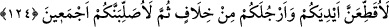
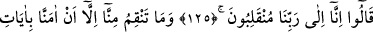
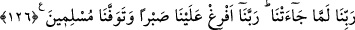

124. Mutlaka ellerinizi ve ayaklarınızı çaprazlama keseceğim, sonra da hepinizi
asacağım!”
“Elbette ellerinizi ve ayaklarınızı çaprazlama” yani, sağ ellerinizi ve sol
ayaklarınızı “keseceğim, sonra hepinizi” rüsvay etmek ve benzerlerinize de böyle bir
iş yapmaktan vazgeçirmek üzere Mısır nehrinin (Nil ırmağı) kenarında hurma dallarına
“asacağım!”
El ve ayakları çapraz olarak kesme işini ilk olarak yapanın Firavun olduğu
söylenmiştir. Sonra Allah Teâlâ bu cezayı, günahlarının çok büyük olduğunu göstermek
üzere yol kesicilere uygun görmüş ve bunları “Allah ve Rasûlü ile savaşanlar” diye
isimlendirmiştir (bk. el-Mâide, 5/33).
125-126. Onlar: Biz zaten Rabbimize döneceğiz. Sen sadece Rabbimizin ayetleri
bize geldiğinde onlara inandığımız için bizden intikam alıyorsun. Ey Rabbimiz! Bize
bol bol sabır ver, müslüman olarak canımızı al, dediler.
Sihirbazlar, imanlarında sebât ederek “dediler ki: “Biz zaten” mutlaka öleceğiz ve
“Rabb’imize döneceğiz!” Dolayısıyla, bunun senin tarafından olup olmaması arasında
bir fark yoktur. Onun için senin tehdidine aldırmayız. Yâhut da sen bize söylediğin
şekilde işkence yaparsan biz de Rabb’imizin rahmet ve sevabına döneceğiz dediler.
Böylece sanki onlar Allah’a kavuşmaya olan arzuları sebebiyle Firavun’un işkencesini
güzel gördüler.
Mesnevî’de denilmiştir ki:
Su ve çamur içinde olan canlar
Su ve çamurdan kurtulunca gönülleri sevinç dolar
Hak aşkının havasında raksederler
Ayın ondördü gibi noksansız ve tam bir hale gelirler
Ruhun üzerinden ten örtüsü kalkınca
Dostu görmekten dolayı yüzlerce fetihlere erer
Can, su rengindeki âlemde şu nârayı atar:
«Keşke kavmim, Rabbim beni ne yüzden yarlığadı, bilse idi»
“Sen ancak, Rabb’imizin ayetleri gelince ona inandık diye bizden öç alıyorsun.”